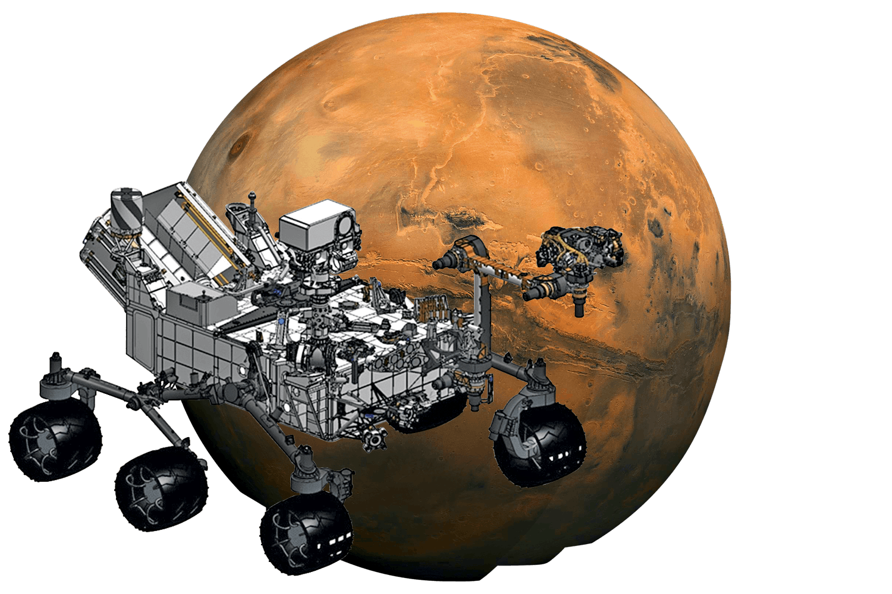

Um novo capítulo
para a humanidade
Com o avanço da tecnologia e as missões espaciais em desenvolvimento, estamos mais próximos do que nunca de colocar o primeiro ser humano no planeta vermelho. Junte-se a nós nessa jornada para o futuro!
Objetivos Científicos e a Busca por Vida
A exploração de Marte visa entender o passado, presente e futuro do planeta, investigando a possibilidade de vida e suas condições. Foca na presença de água, fontes de energia e sinais de vida, além de estudar o clima, geologia e magnetismo de Marte. A missão também analisa os desafios para a exploração humana, como a proteção contra radiação e a disponibilidade de recursos essenciais.
Terraformação de Marte
A terraformação de Marte, tema frequentemente explorado na ficção científica e por cientistas, é investigada quanto à viabilidade de transformar o ambiente marciano para torná-lo habitável para humanos. Estudos recentes indicam que Marte não possui dióxido de carbono suficiente que poderia ser liberado para aquecer o planeta de maneira significativa. Além disso, as condições atmosféricas marcianas são extremamente hostis, e tecnologias necessárias para modificar a atmosfera, aumentar a temperatura e manter água líquida não estão disponíveis atualmente. Outras alternativas, como a introdução de gases artificiais ou redirecionamento de cometas, também se mostram inviáveis, sugerindo que a terraformação é, por enquanto, impossível com a tecnologia atual.
Rover Perseverance
O rover Perseverance, da NASA, pousou em Marte em 18 de fevereiro de 2021, na cratera Jezero. Sua missão é buscar sinais de vida microbiana passada e estudar a geologia e o clima do planeta vermelho. Equipado com instrumentos avançados como o SHERLOC e o PIXL, o Perseverance analisa rochas e solos marcianos. Um dos experimentos mais inovadores é o MOXIE, que tenta produzir oxigênio a partir do dióxido de carbono na atmosfera marciana, preparando o caminho para futuras missões tripuladas.
Além disso, o Perseverance coleta amostras de solo e rochas que podem ser trazidas para a Terra em missões futuras. O rover trabalha em conjunto com o helicóptero Ingenuity, que realiza voos para explorar e identificar pontos de interesse. Cada descoberta do Perseverance é um passo importante na exploração de Marte e na preparação para futuras missões humanas.